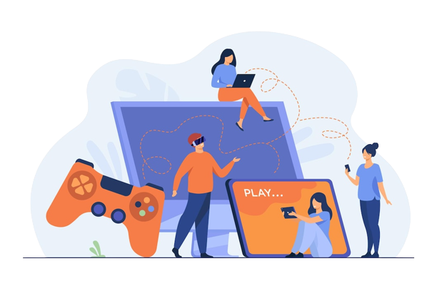

Latar Belakang Art of Curious

Art of Curious atau AOCh berawal dari keinginan kami dan rekan-rekan kami untuk membuat game kartu yang dapat bermanfaat dan tidak hanya untuk bermain-main saja. Kita memulai dengan ide untuk membuat puluhan kartu yang berisi pertanyaan untuk dimainkan dengan teman. Namun setelah dipikirkan, ada hal yang kurang dari ide itu. Lalu, kita mencari inovasi. Saat itu, salah satu rekan kami mengusulkan ide untuk membuat permainan yang dapat membantu orang komunikasi bahkan sampai dapat digunakan untuk terapi. Permainan kartu kami tidak hanya begitu saja, permainan. Kartu-kartu kami bertujuan untuk membantu komunikasi orang-orang yang menggunakan kartu ini. Kartu ini, membantu orang untuk membicarakan diri mereka sendiri dan masalah-masalah mereka yang akhirnya dapat dikeluarkan secara bicara yang dapat mengurangi stres. Pengurangan stres adalah salah satu hal yang kita fokuskan dalam pembuatan kartu ini.
Deskripsi Singkat Tentang Produk Kami
Permainan kartu AOCh adalah permainan kartu yang berisi pertanyaan-pertanyaan yang merentang dari pertanyaan non-pribadi sampai pertanyaan yang lebih pribadi. AOCh memiliki tiga level pertanyaan dari biasa, sedang, sampai pertanyaan yang personal. Permainan kartu ini digunakan untuk orang-orang dari berbagai usia untuk dapat terbuka tentang perasaan mereka. Game ini bisa dimainkan sebagai ice breaker atau juga dapat digunakan dalam terapi. Permainan kartu ini akan membantu orang membuka diri dan lebih dekat satu sama lain.
Metode Promosi
Tentu saja dalam mengembangkan produk Card Game dibutuhkan beberapa strategi atau metode yang tepat demi tercapainya tujuan-tujuan yang diharapkan. Strategi-strategi yang diterapkan dalam promosi produk, sebagai berikut:
- Promosi Langsung
- Brosur
- Promosi Online
- Promo Penjualan
Dengan adanya sejumlah strategi promosi yang sudah disebutkan, kami berharap metode tersebut dapat meningkatkan pengetahuan masyarakat tentang produk kami yang terbilang baru.